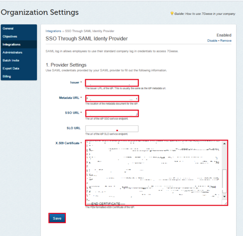
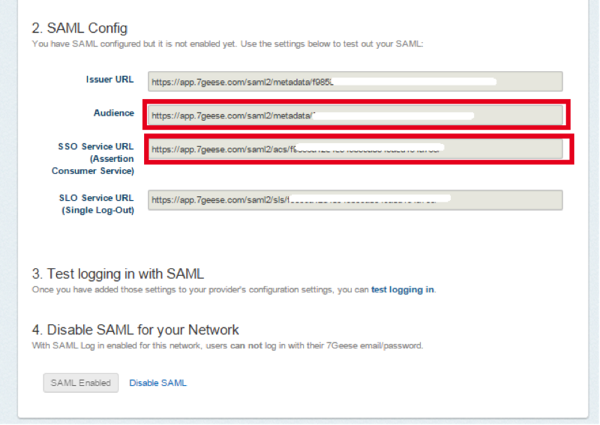
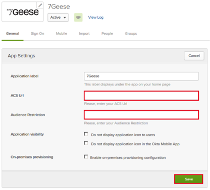
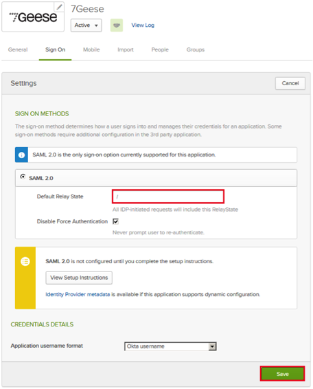
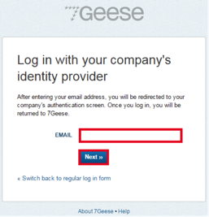

Sign in to the Okta Admin app to generate this variable.
Sign in to the Okta Admin app to have this variable generated for you
Sign in to the Okta Admin app to generate this variable
Sign into the Okta Admin Dashboard to generate this variable.




Done!
Notes:
IdP-initiated flows, SP-initiated flows, and Just In Time (JIT) provisioning are all supported.
For an SP-initiated flow:
